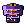
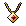

Eine Krone aus Flammen
Vor Generationen fiel Glut vom Himmel auf die Senke unter dem Aschegrat. Die Überlebenden bauten ihre Dörfer auf der erkalteten Asche wieder auf, und der Berg schwieg.
Jetzt schweigt er nicht mehr. Die Toten steigen aus den Katakomben, und wer den Spuren folgt, findet überall dasselbe Zeichen: eine Krone aus Flammen.

„Unter dem Knochenwappen glüht ein zweites Zeichen, eine Krone aus Flammen.“Maren, Dorfälteste

„Ich sehe … Feuer. Eine Krone. Und dich.“Ysolde, Seherin

„Ein Tor aus flüssigem Eisen … Dann ist es wahr. Ignaroth ist erwacht.“Hale, Kommandant der Rauhwacht
Sechs Regionen
Die Hauptgeschichte führt dich von Stufe 1 bis 20 durch alle, jede mit eigenem Licht, Wetter und eigener Musik.

Die Glutsenke
Stufe 1–3Das letzte Dorf vor dem Berg. Nachts kommen die Aschewölfe bis an die Palisaden.
-
Die Katakomben
Dungeon · Stufe 3–6Gänge voller Knochen unter dem Dorf. Ganz unten steht ein Thron.

Der Aschenwald
Stufe 6–11Verkohlte Stämme, Keiler mit Glutborsten und die Lager von Rask, dem Brandschatzer.

Der Versunkene Tempel
Dungeon · Stufe 10–12Ein überfluteter Tempel am See. Seine Kultisten singen noch immer.

Die Schlackenhöhen
Stufe 12–17Feuerwichte, Magmahunde und der Schlackenkoloss. Oben hält die Rauhwacht die letzte Stellung.

Die Glutschmiede
Dungeon · Stufe 17–20Hinter einem Tor aus flüssigem Eisen wartet der Tyrann.
Vier Völker
Frei mit jeder Klasse kombinierbar.
 MenschHaben den Aschewintern getrotzt und erholen sich schneller als alle anderen.
MenschHaben den Aschewintern getrotzt und erholen sich schneller als alle anderen. ZwergAus den Schmiedehallen unter dem Aschegrat. Rüstung wie eine zweite Haut.
ZwergAus den Schmiedehallen unter dem Aschegrat. Rüstung wie eine zweite Haut. SchattenelfWanderer der Zwielichtwälder. Schnell und schwer zu treffen.
SchattenelfWanderer der Zwielichtwälder. Schnell und schwer zu treffen. GlutgeboreneVom Glutfall gezeichnet. In ihren Adern glimmt Feuer.
GlutgeboreneVom Glutfall gezeichnet. In ihren Adern glimmt Feuer.
Nach dem Tyrannen
Ab Stufe 20 öffnet sich die Glutpforte: dreißig Ränge Glutprüfungen, jedes Mal neu zusammengesetzt, jedes Mal mit einem Boss am Ende. Dazu 170 Gegenstände, Rüstungssets, der Schmied, Talente und Färbemittel.
 Emberwrath, Klinge der Könige
Emberwrath, Klinge der Könige
Harnisch des Tyrannen Nachtflüstern
Nachtflüstern Sternenfall
Sternenfall Arkaner Weltenstab
Arkaner Weltenstab
Glutherz